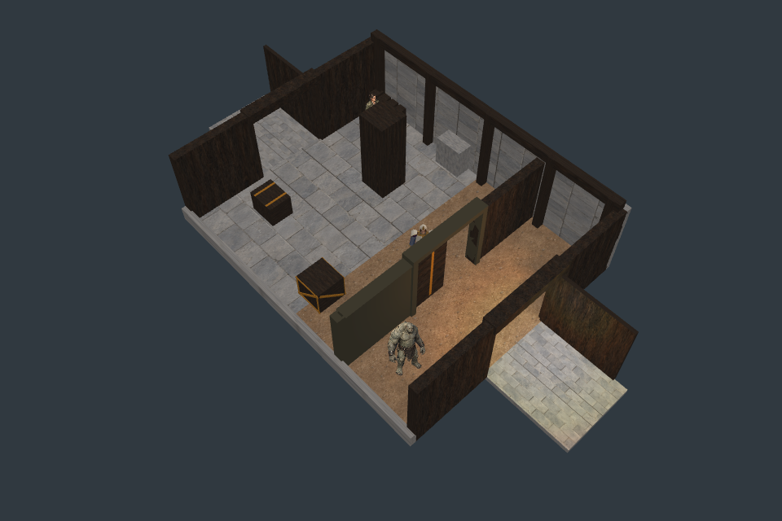

Godot is the shipping target; Pixi is the test harness. Continuous panel geometry, partial-aperture collision, saved progress and the closing sweep guard pass. Smooth live playback fails on this machine. The chamber is rebuilt each frame; the next test will batch geometry.
The recorded half-second travel shows only 3–8 intermediate frames. Composition reaches 125.5 ms. Do not interpret correct still images as a performance or smooth-motion pass. F01’s broad metal pocket is also too flat/dark for final art.

F01: timber waystation with metal frame. F02: rock-cut reservoir with stone frame and metal panel. Both exits retain their exterior aprons. Full faction detail, actor integration and lighting remain incomplete.
6,324 panel pixel witnesses pass within 2 RGB at native and fresh 3× resolution, including reversed draw order. 1,728 fully open aperture witnesses clear. Stale closed visuals are detected at every faction/resolution. 33 headless checks pass after preserving two strict floating-point equality failures; supplementary geometric pause drift is below 10⁻¹² m.
The mage can cross a half-open lower aperture. The door pauses before sweeping into a newly arriving actor. The 2.7 m monster cannot pass under this 2.5 m lintel; earlier tests omitted that obstruction. This is a real content-clearance constraint, not an accepted penetration.
Report · Receipt · Original literal failures · Pixel witnesses · Playback timings · Live fixture (local server)